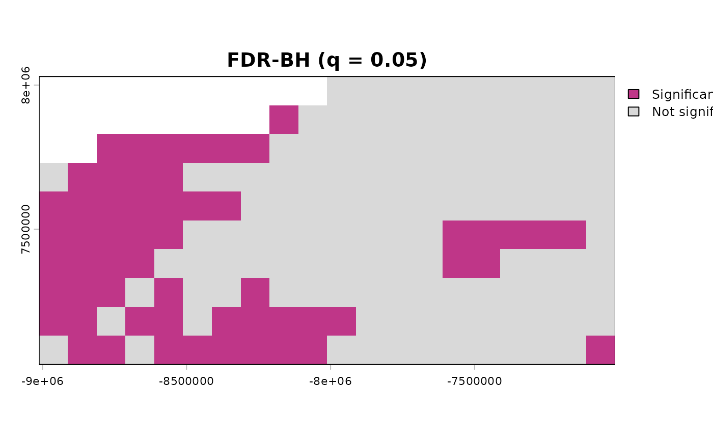
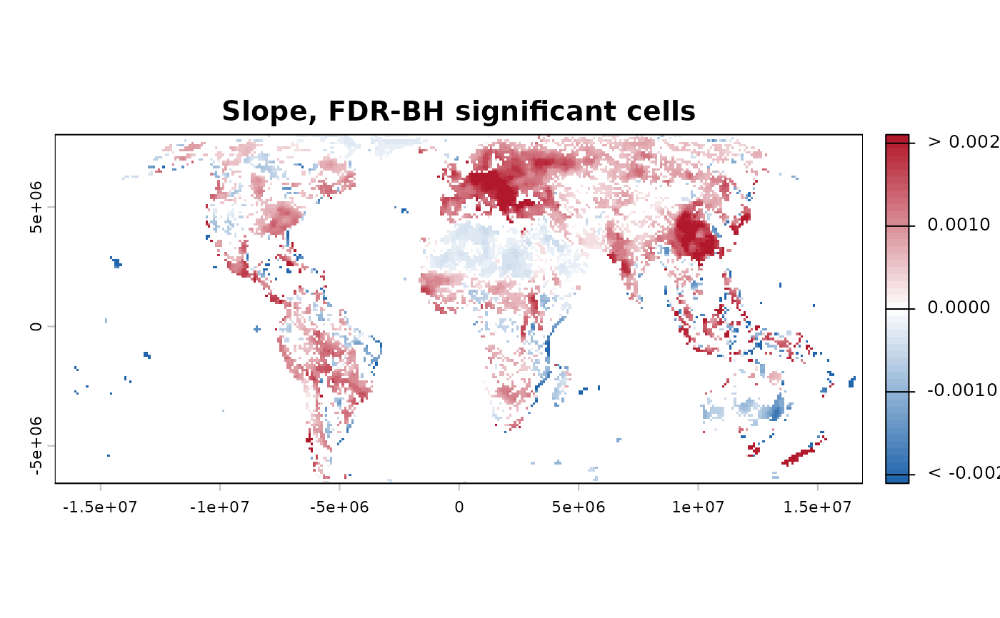
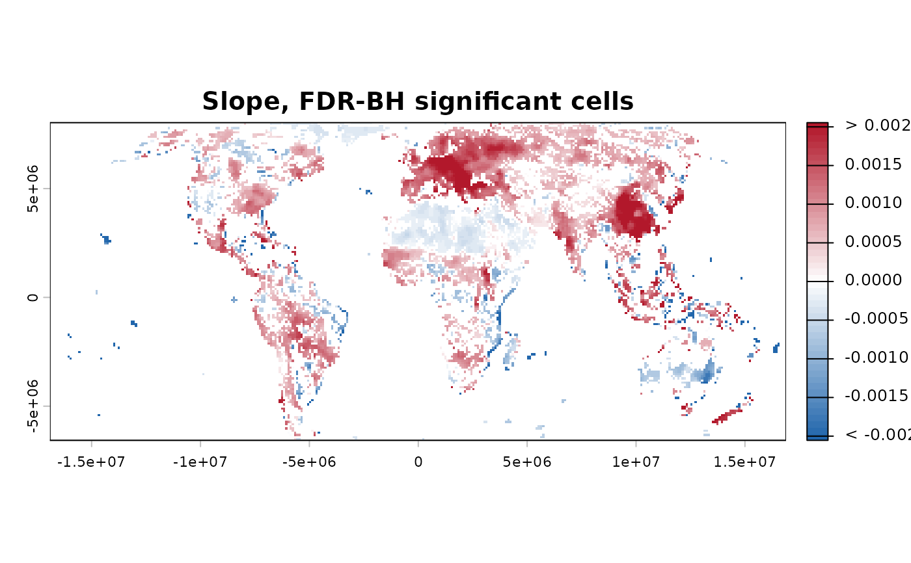

Configure a monotonic or linear trend-analysis workflow
Source:R/workflow_trends.R
workflow_trends.RdThis function analyses monotonic or linear temporal trends using a
user-selected trend test – available methods include the
Mann-Kendall family ("CMK", "MK", "MMK") and ordinary
least-squares regression ("OLS"); it does not detect abrupt
changes, periodicity, or general nonlinear temporal patterns. Like
workflow_tst() and workflow_rta(), each of which implements one
specific published analytical workflow, this function analyses that
same class of trend. Unlike those two, workflow_trends() lets
you choose your own combination of prewhitening, trend testing,
slope estimation and multiple-testing correction methods – useful
when no single published workflow matches what a given analysis
needs, or when comparing how sensitive a result is to that choice
(see the package's own validation framework, sim_trend_stack()/
compare_detections(), for a way to evaluate that sensitivity
against data with a known answer, rather than only this function's
own runtime warnings below).
Usage
workflow_trends(
x,
prewhiten_method = c("TFPW_WS", "TFPW_Y", "TFPW_Z", "VCTFPW", "none"),
trend_method = c("CMK", "MK", "OLS", "MMK"),
slope_method = c("TS", "OLS", "RM"),
fdr_method = c("BKY", "BH", "BY"),
prewhiten_args = list(),
trend_args = list(),
slope_args = list(),
fdr_args = list(),
n_cores = 1,
report = TRUE,
verbose = TRUE
)Arguments
- x
A
terra::SpatRasterwith one layer per time step, ordered chronologically. All layers must share the same geometry. Temporal spacing is assumed regular unless explicit time coordinates are supplied through the relevant underlying function's own arguments (e.g.trend_args = list(t = ...),slope_args = list(t = ...)).- prewhiten_method
Which prewhitening method to apply before trend testing, or
"none"to skip this step entirely. One of"TFPW_WS"(default; Wang and Swail, 2001),"TFPW_Y"(Yue, Pilon and Cavadias, 2002),"TFPW_Z"(Zhang, Vincent, Hogg and Niitsoo, 2000),"VCTFPW"(Wang, Chen, Becker and Liu, 2015), or"none". Seeprewhiten()'s ownmethodargument for the full comparison between these four, and "Combinations this function warns about" below for the one combination involvingtrend_methodworth knowing about before combining.- trend_method
Which trend test to run. One of
"CMK"(default; Neeti and Eastman, 2011),"MK"(classic Mann-Kendall),"OLS"(tests whether an ordinary-least-squares regression slope differs from zero, rather than a rank-based statistic – seetrend_test()'s own"OLS"entry for the specificpthis returns and the assumptions its own inference relies on), or"MMK"(Hamed and Rao, 1998). Seetrend_test()'s ownmethodargument for the full comparison between these four.- slope_method
Which slope estimator to run, or
NULLto skip this step entirely (matchingworkflow_tst()'s owntheil_sen = FALSE). One of"TS"(default; Theil-Sen),"OLS","RM"(Siegel's repeated median), orNULL. Seeslope_estimator()'s ownmethodargument for the full comparison between the three.- fdr_method
Which multiple-testing correction to apply, or
NULLto skip this step. One of"BKY"(default; Benjamini, Krieger and Yekutieli, 2006),"BH"(Benjamini and Hochberg, 1995), or"BY"(Benjamini and Yekutieli, 2001)."BY"is an opt-in safeguard when control under arbitrary dependence is scientifically required; it is generally more conservative than"BH"and adaptive"BKY". Seefdr_correction()'s ownmethodargument, andfdr_by()'s own documentation, for the full reasoning.- prewhiten_args, trend_args, slope_args, fdr_args
Named lists of extra arguments forwarded to the corresponding underlying function, beyond
methoditself (which this function's own arguments above already control) – e.g.trend_args = list(ties = TRUE, window_size = 5L),fdr_args = list(q = 0.1). For CMK, omittingwindow_sizepreserves the 3 by 3 CMK region described by Neeti and Eastman (2011), as implemented in TerrSet's Kendall module. Arguments already controlled directly byworkflow_trends()itself –x,method,report,verbose, and cluster- management arguments (n_cores/shared_cluster) – must not be repeated in these lists; a clear error is raised instead of silently overriding the workflow configuration.- n_cores
Integer. Number of workers made available to stages that support parallel execution – a single PSOCK cluster is created once and reused where possible, not one per step. Not every method actually uses it:
slope_method = "OLS"'s own vectorised computation and the current"RM"implementation, for instance, do not.1(default): sequential. Requesting more cores than are actually available falls back to the number detected, with a message (see?trend_test's ownn_coresfor the exact behaviour every step here shares).- report
Logical. Forwarded to every step's own
reportargument – ifTRUE, each analytical stage may print its own component-level summary and draw its own diagnostic plots as it runs, not only a single consolidated summary of the whole workflow at the end. SetFALSEto suppress this intermediate output and inspect the returned object directly instead.- verbose
Logical. Forwarded to every step's own
verboseargument, and controls this function's own step-by-step progress messages and elapsed time. Per-stage times are returned intiming.
Value
A list of class
c("workflow_trends", "sptrends"):
- prewhiten
The output of
prewhiten(), orNULLifprewhiten_method = "none".- trend
The multilayer
SpatRasterreturned astrend_test()'s own$stats(the test statistic, rawp, and any method-specific layers – see?trend_test's own "Value" section for exactly which, since this differs bytrend_method).- trend_summary_table
The output of
trend_summary()ontrend.- slope
The single-layer
SpatRasterextracted fromslope_estimator()'s own$slope(not the full"slope"object that function itself returns), orNULLifslope_method = NULL.- fdr
The output of
fdr_correction(), orNULLiffdr_method = NULL.- timing
A named list of per-step elapsed seconds, only for steps that actually ran.
Details
Function type: Core function – a configurable composition of the same analytical stages used by the published workflows.
Typical use
raster time series
|
workflow_trends()
|
optional prewhitening -> trend test -> optional slope -> optional FDR
|
one `sptrends` result containing every computed stageUse this configurable workflow when the fixed published combinations
in workflow_tst() and workflow_rta() do not match the analysis.
For seasonal input, first pass the $anomalies component returned by
compute_anomalies().
Methodological details
Relationship to TST.
True Significant Trends (TST) is the methodological origin of
sptrends and supplies the architecture of the complete workflow:
temporal preprocessing, trend testing, slope estimation and
multiple-testing correction. TST includes all these stages, but not
every method now available here. workflow_trends() generalises the
architecture with additional methods and optional stages. A complete
configuration retains the analytical philosophy inherited from TST;
the name TST remains reserved for the published methods and sequence
reproduced by workflow_tst().
Every method available on the individual functions this orchestrates
– prewhiten(), trend_test(), slope_estimator(),
fdr_correction() – can be freely combined here, with two
exceptions this function warns about explicitly rather than
silently allowing (see "Combinations this function warns about"
below). The trend test and slope estimator answer different
questions and need not use the same statistical framework –
mixing a robust trend test with a parametric slope estimator (or
vice versa) is unconventional, but not warned about here.
Nevertheless, users remain responsible for ensuring the selected
combination is appropriate for their own data and scientific
objective; other combinations this function does not itself flag
can still be questionable for a given dataset (e.g. "CMK" on an
already spatially smoothed series – see "Combinations this
function warns about" below for the one combination this function
does check for explicitly).
How it works.
(optional)
prewhiten– removes serial autocorrelation.trend_test– is there a monotonic trend?(optional)
slope_estimator– how fast? and (optional) FDR correction – which cells survive multiple testing? These two are independent branches after the trend test, not a sequence: FDR correction depends only on the test's own p-values, not on whether a slope was estimated at all.
The same ordering logic as the two published workflows applies:
prewhitening (when requested) happens before the trend test, since
the test assumes independent observations; the slope (when
requested) is estimated on the same (optionally prewhitened) series
the test itself used; and FDR correction needs the test's own
p-values to exist first, but nothing else – it does not depend on
whether a slope was estimated at all. Unlike prewhitening and FDR
correction, which were already optional here from the start, slope
estimation being skippable too (slope_method = NULL) was added
later, to bring this function to full parity with workflow_tst()'s
own theil_sen = FALSE – see NEWS.md for when.
Statistical assumptions: alpha and q.
As with workflow_tst()/workflow_rta(): q (inside fdr_args,
e.g. fdr_args = list(q = 0.1)) bounds the expected proportion of
false positives among cells called significant after correction –
it is not the same quantity as an uncorrected per-cell \(\alpha\).
Applying a per-cell significance threshold across many cells
without multiplicity control can substantially increase the number
of false-positive detections, the multiple-testing problem
fdr_method exists to address. See ?workflow_tst's own "A note
on alpha and q" section for the fuller explanation, and
fdr_correction() for the distinction in full.
Statistical assumptions: monotonicity and seasonality.
As with workflow_tst()/workflow_rta(): every method this function
can combine is designed around a monotonic trend, not a
periodic/seasonal cycle. If x has a seasonal cycle (e.g. raw
monthly data with an annual signal), remove it first with
compute_anomalies() and pass the anomalies here, not the raw
seasonal series.
Computational considerations. Runtime depends primarily on the selected methods and raster size. Theil-Sen and repeated-median slopes are more expensive than OLS; CMK and parallel-capable stages can reuse one workflow-level PSOCK cluster. Per-stage elapsed times are retained in the returned object.
Limitations. Configurability does not make every combination scientifically interchangeable. The caller remains responsible for matching the chosen assumptions to the data; the explicit safeguards below cover important known conflicts, not every possible misuse.
Methodological safeguards. Combining any prewhitening method with
trend_method = "MMK" is warned against because both address temporal
autocorrelation by different mechanisms. Applying both is redundant and
may compound the correction. The warning is issued before computation;
it does not forcibly stop an explicitly requested analysis.
Quality assurance. Integration tests exercise every available method
family, optional stages, invalid and questionable combinations, protected
argument forwarding, BH/BKY/BY display paths, exact warning behaviour,
shared parallel resources, timing fields, and returned S3 structure.
Component results are compared with direct calls to prewhiten(),
trend_test(), slope_estimator(), and fdr_correction(). See
?sptrends for the complete internal and external quality strategy.
References
Primary method reference (prewhiten_method = "TFPW_WS", the
default):
Wang, X.L. and Swail, V.R. (2001) Changes of Extreme Wave Heights in Northern Hemisphere Oceans and Related Atmospheric Circulation Regimes. Journal of Climate, 14(10), 2204-2221.
Primary method reference (prewhiten_method = "TFPW_Y"):
Yue, S., Pilon, P., Phinney, B. and Cavadias, G. (2002) The influence of autocorrelation on the ability to detect trend in hydrological series. Hydrological Processes, 16(9), 1807-1829. doi:10.1002/hyp.1095
Primary method reference (prewhiten_method = "TFPW_Z"):
Zhang, X., Vincent, L.A., Hogg, W.D. and Niitsoo, A. (2000) Temperature and precipitation trends in Canada during the 20th century. Atmosphere-Ocean, 38(3), 395-429. doi:10.1080/07055900.2000.9649654
Primary method reference (prewhiten_method = "VCTFPW"):
Wang, W., Chen, Y., Becker, S. and Liu, B. (2015) Variance Correction Prewhitening Method for Trend Detection in Autocorrelated Data. Journal of Hydrologic Engineering, 20(12), 04015033. doi:10.1061/(ASCE)HE.1943-5584.0001234
Primary method reference (trend_method = "CMK", the default):
Neeti, N. and Eastman, J.R. (2011) A Contextual Mann-Kendall Approach for the Assessment of Trend Significance in Image Time Series. Transactions in GIS, 15(5), 599-611. doi:10.1111/j.1467-9671.2011.01280.x
Primary method reference (trend_method = "MMK"):
Hamed, K.H. and Rao, A.R. (1998) A modified Mann-Kendall trend test for autocorrelated data. Journal of Hydrology, 204(1-4), 182-196. doi:10.1016/S0022-1694(97)00125-X
Primary method reference (fdr_method = "BH"):
Benjamini, Y. and Hochberg, Y. (1995) Controlling the False Discovery Rate: A Practical and Powerful Approach to Multiple Testing. Journal of the Royal Statistical Society: Series B, 57, 289-300. doi:10.1111/j.2517-6161.1995.tb02031.x
Primary method reference (fdr_method = "BKY", the default):
Benjamini, Y., Krieger, A.M. and Yekutieli, D. (2006) Adaptive Linear Step-Up Procedures that Control the False Discovery Rate. Biometrika, 93(3), 491-507. doi:10.1093/biomet/93.3.491
Primary method reference (fdr_method = "BY", not recommended by
default – see the fdr_method argument above for why):
Benjamini, Y. and Yekutieli, D. (2001) The control of the false discovery rate in multiple testing under dependency. Annals of Statistics, 29(4), 1165-1188. doi:10.1214/aos/1013699998
trend_method = "MK", trend_method = "OLS", and
slope_method = "TS"/"OLS"/"RM" do have their own foundational
references (Mann, 1945 and Kendall, 1975; Legendre, 1805 and Gauss,
1809; Theil, 1950 and Sen, 1968; Siegel, 1982, respectively) –
cited in full under ?trend_test and ?slope_estimator rather than
repeated here.
See also
Other pipeline functions:
workflow_rta(),
workflow_tst()
Examples
# \donttest{
# Annual mean NDVI from the bundled environmental dataset.
r <- read_ordered_stack(example_data("vhp_ndvi"))
#> Temporal order auto-detected with pattern '(19[0-9]{2}|20[0-9]{2})'.
#> Automatic mode: order detected from file names. For higher reliability -- especially if the series is not annual -- supplying 'files' explicitly (with 'time' or 'cycle_type') is recommended. See ?read_ordered_stack.
#> Temporal order verification (mandatory, cannot be skipped):
#> stack_position detected_number file
#> 1 1982 VHP_SMN_annual_ndvi_1982.tif
#> 2 1983 VHP_SMN_annual_ndvi_1983.tif
#> 3 1984 VHP_SMN_annual_ndvi_1984.tif
#> 4 1985 VHP_SMN_annual_ndvi_1985.tif
#> 5 1986 VHP_SMN_annual_ndvi_1986.tif
#> 6 1987 VHP_SMN_annual_ndvi_1987.tif
#> 7 1988 VHP_SMN_annual_ndvi_1988.tif
#> 8 1989 VHP_SMN_annual_ndvi_1989.tif
#> 9 1990 VHP_SMN_annual_ndvi_1990.tif
#> 10 1991 VHP_SMN_annual_ndvi_1991.tif
#> 11 1992 VHP_SMN_annual_ndvi_1992.tif
#> 12 1993 VHP_SMN_annual_ndvi_1993.tif
#> 13 1994 VHP_SMN_annual_ndvi_1994.tif
#> 14 1995 VHP_SMN_annual_ndvi_1995.tif
#> 15 1996 VHP_SMN_annual_ndvi_1996.tif
#> 16 1997 VHP_SMN_annual_ndvi_1997.tif
#> 17 1998 VHP_SMN_annual_ndvi_1998.tif
#> 18 1999 VHP_SMN_annual_ndvi_1999.tif
#> 19 2000 VHP_SMN_annual_ndvi_2000.tif
#> 20 2001 VHP_SMN_annual_ndvi_2001.tif
#> 21 2002 VHP_SMN_annual_ndvi_2002.tif
#> 22 2003 VHP_SMN_annual_ndvi_2003.tif
#> 23 2004 VHP_SMN_annual_ndvi_2004.tif
#> 24 2005 VHP_SMN_annual_ndvi_2005.tif
#> 25 2006 VHP_SMN_annual_ndvi_2006.tif
#> 26 2007 VHP_SMN_annual_ndvi_2007.tif
#> 27 2008 VHP_SMN_annual_ndvi_2008.tif
#> 28 2009 VHP_SMN_annual_ndvi_2009.tif
#> 29 2010 VHP_SMN_annual_ndvi_2010.tif
#> 30 2011 VHP_SMN_annual_ndvi_2011.tif
#> 31 2012 VHP_SMN_annual_ndvi_2012.tif
#> 32 2013 VHP_SMN_annual_ndvi_2013.tif
#> 33 2014 VHP_SMN_annual_ndvi_2014.tif
#> 34 2015 VHP_SMN_annual_ndvi_2015.tif
#> 35 2016 VHP_SMN_annual_ndvi_2016.tif
#> 36 2017 VHP_SMN_annual_ndvi_2017.tif
#> 37 2018 VHP_SMN_annual_ndvi_2018.tif
#> 38 2019 VHP_SMN_annual_ndvi_2019.tif
#> 39 2020 VHP_SMN_annual_ndvi_2020.tif
#> 40 2021 VHP_SMN_annual_ndvi_2021.tif
#> 41 2022 VHP_SMN_annual_ndvi_2022.tif
#> 42 2023 VHP_SMN_annual_ndvi_2023.tif
 #> Stack built: 42 layers, 146 x 338 cells.
#> >> [read_ordered_stack()] elapsed: 0.12 s
# A combination neither TST nor RTA offers on its own: Yue-Pilon
# prewhitening, classic Mann-Kendall, OLS slope, standard (BH) FDR.
result <- workflow_trends(r, prewhiten_method = "TFPW_Y",
trend_method = "MK", slope_method = "OLS",
fdr_method = "BH",
report = FALSE, verbose = FALSE)
result
#> <workflow_trends result>
#> Prewhitening (TFPW_Y): all 15675 valid cells
#> Trend test: 15675 cells (S statistic)
#> Slope: median 0.0002806 (range -0.01009 to 0.008984)
#> Significant after FDR-BH: 8656 (55.2%)
#> Use summary() for details, plot() for a map.
plot(result, which = "significance")
#> Stack built: 42 layers, 146 x 338 cells.
#> >> [read_ordered_stack()] elapsed: 0.12 s
# A combination neither TST nor RTA offers on its own: Yue-Pilon
# prewhitening, classic Mann-Kendall, OLS slope, standard (BH) FDR.
result <- workflow_trends(r, prewhiten_method = "TFPW_Y",
trend_method = "MK", slope_method = "OLS",
fdr_method = "BH",
report = FALSE, verbose = FALSE)
result
#> <workflow_trends result>
#> Prewhitening (TFPW_Y): all 15675 valid cells
#> Trend test: 15675 cells (S statistic)
#> Slope: median 0.0002806 (range -0.01009 to 0.008984)
#> Significant after FDR-BH: 8656 (55.2%)
#> Use summary() for details, plot() for a map.
plot(result, which = "significance")

plot(result, which = "slope")

# Siegel's repeated median as the slope estimator instead of OLS --
# useful when a dataset is suspected to have enough outliers or
# leverage points that even Theil-Sen's own ~29% breakdown point
# might not fully resist them (see ?slope_estimator's own "RM" entry
# under `method`).
result_rm <- workflow_trends(r, prewhiten_method = "TFPW_Y",
trend_method = "MK", slope_method = "RM",
fdr_method = "BH",
report = FALSE, verbose = FALSE)
plot(result_rm, which = "slope")

# Skipping optional stages entirely -- slope_method/fdr_method both
# NULL leaves $slope/$fdr NULL too, rather than some placeholder
# value, making the modularity concrete rather than just described.
result_test_only <- workflow_trends(r, prewhiten_method = "none",
trend_method = "MMK",
slope_method = NULL,
fdr_method = NULL,
report = FALSE, verbose = FALSE)
is.null(result_test_only$slope)
#> [1] TRUE
is.null(result_test_only$fdr)
#> [1] TRUE
# }
if (FALSE) { # \dontrun{
# A combination this function warns about: MMK plus prewhitening.
# Not run automatically (unlike the examples above) specifically
# because its only purpose here is to demonstrate the warning
# itself, which would otherwise fire on every R CMD check and every
# example() call.
r <- read_ordered_stack(example_data("vhp_ndvi"))
result_warns <- workflow_trends(r, trend_method = "MMK",
report = FALSE, verbose = FALSE)
} # }